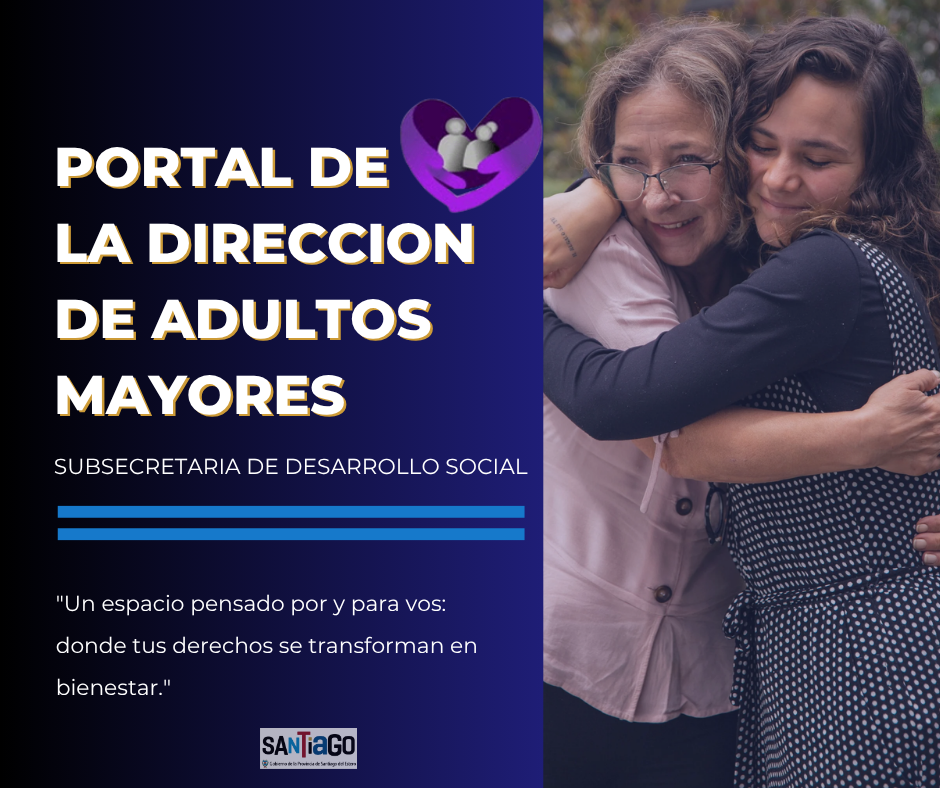
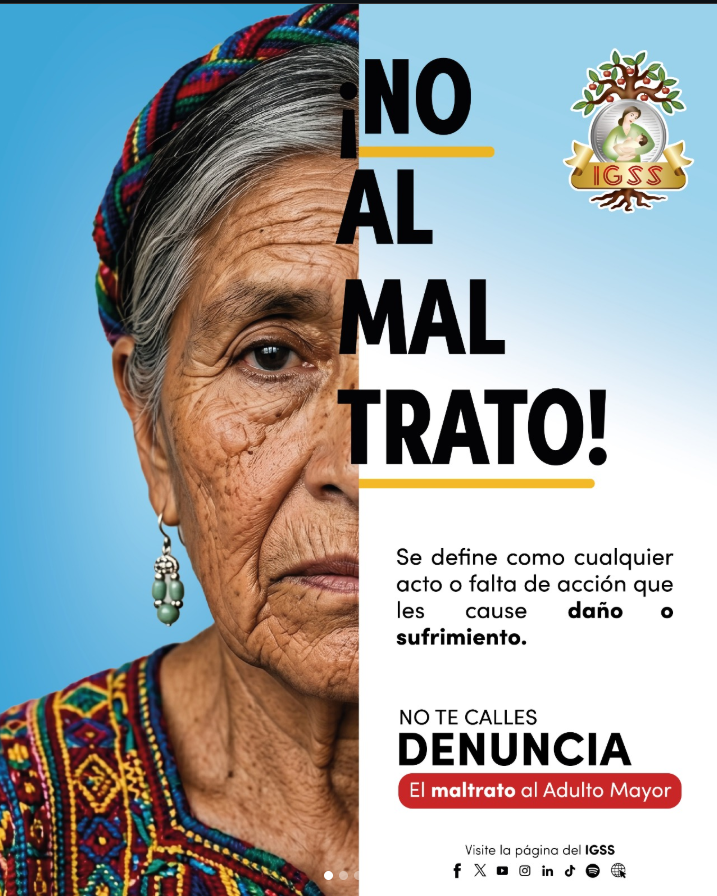
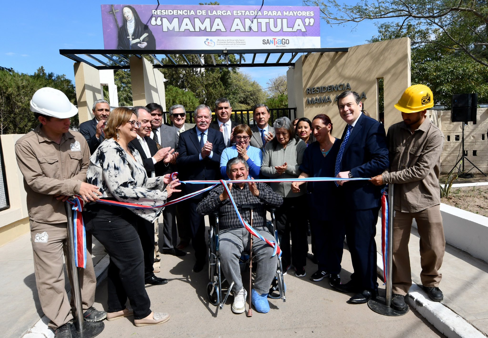

El valor del respeto
Claves para promover el buen trato hacia las personas mayores.
Transformamos el acompañamiento en bienestar. Brindamos asistencia social, asesoramiento y gestionamos políticas de salud e integración comunitaria para que cada persona mayor viva plenamente y con sus derechos garantizados.

Somos el equipo de la Dirección de Adultos Mayores (DGAMSDE), perteneciente a la Subsecretaría de Desarrollo Social del Ministerio de Desarrollo Social de Santiago del Estero. Trabajamos con el propósito de garantizar que cada persona mayor de nuestra provincia acceda plenamente a sus derechos, promoviendo un bienestar integral y una vida activa.
Entendemos que el envejecimiento es una etapa de protagonismo. Por eso, acompañamos a las familias e instituciones para asegurar espacios de participación colectiva, brindando asesoramiento profesional y herramientas técnicas para que tus saberes sigan transformando la comunidad.
Abordamos cada situación de forma integral, considerando la salud física, emotional y el contexto social de la persona mayor para una intervención efectiva.
Contamos con un equipo interdisciplinario que supervisa residencias de larga estadía y centros de día, asegurando estándares óptimos de cuidado y recursos humanos.
Articulamos acciones con hospitales, municipios, organizaciones y redes de DDHH para brindar respuestas rápidas ante situaciones de vulnerabilidad o emergencia.
Lucía Wite, directora de Adultos Mayores de la provincia, conduce el diseño, la articulación y la ejecución de políticas públicas orientadas a la promoción, protección y fortalecimiento de los derechos de las personas mayores en todo el territorio santiagueño. Desde una perspectiva integral e interinstitucional, lidera el trabajo del equipo interdisciplinario, impulsando acciones estratégicas que contribuyen al cumplimiento efectivo de la Ley Provincial N.º 7149 y al fortalecimiento de la red provincial de acompañamiento, inclusión y contención comunitaria.
La Dirección General de Adultos Mayores realiza intervenciones domiciliarias con el fin de transformar la realidad de las personas mayores, promoviendo no solo su bienestar físico y emocional, sino también su inclusión plena en la sociedad. Con un enfoque integral y dinámico, se fomenta una participación activa que va más allá del cuidado, impulsando un cambio cultural que valore la experiencia y los derechos de los adultos mayores. Al trabajar de la mano con instituciones, profesionales y la comunidad, se crean espacios de colaboración y apoyo mutuo que garantizan intervenciones personalizadas y efectivas. Este esfuerzo colectivo busca construir un entorno en el que los adultos mayores sean protagonistas de su propia vida, disfrutando de un envejecimiento digno, respetado y lleno de oportunidades.
Nuestro Equipo: Contamos con el aval de un equipo especializado de Trabajadoras Sociales y personal administrativo.
Acción en Territorio: Realizamos un seguimiento constante y monitoreo para asegurar el cumplimiento de la Ley Provincial N.º 7149.
Garantía de Derechos: Cada intervención busca un bienestar pleno y participación activa.
Trabajo en Conjunto: Mantenemos una interacción permanente con instituciones clave para una respuesta integral.
Salul y Seguridad: Colaboramos con Hospitales, APS, Obras Sociales y la Policía Comunitaria.
Gobierno y Comunidad: Municipios, DDHH y el Consejo Provincial de Adultos Mayores.
Trabajamos de manera integral para garantizar el bienestar bio-psico-social de las personas mayores, brindando acompañamiento profesional y herramientas para una participación activa en la comunidad.
Brindamos intervenciones profesionales y orientación ante situaciones de vulnerabilidad o contingencias que afecten a las personas mayores. Realizamos diagnósticos, seguimiento social y actuaciones de oficio cuando es necesario.
Servicio PrincipalGeneramos espacios de formación con perspectiva gerontológica dirigidos a familias, cuidadores domiciliarios, técnicos y profesionales del área.
Formación ContinuaOfrecemos herramientas técnicas para la elaboración de proyectos desde las organizaciones de personas mayores, valorando sus saberes y su territorialidad.
Participación ActivaImplementamos políticas de envejecimiento activo y campañas de sensibilización permanentes para fomentar el buen trato y el ejercicio pleno de los derechos.
ConcientizaciónContamos con un equipo de profesionales, integrado por trabajadoras sociales y personal administrativo, especializados en el monitoreo y la atención efectiva en todo el territorio provincial.
Calidez y ProfesionalismoTrabajamos en conjunto con municipios, hospitales, policía comunitaria y el Consejo Provincial de Adultos Mayores para que nuestras soluciones lleguen a cada rincón.
ConcientizaciónGarantizando espacios seguros y de calidad bajo la Ley N.º 7149.
En la provincia de Santiago del Estero, el funcionamiento de los espacios gerontológicos está regulado para asegurar que cada persona mayor reciba una atención digna y profesional. Nuestra Dirección es la encargada de supervisar que estos establecimientos cumplan con los estándares necesarios para su habilitación.
Todos los establecimientos listados cumplen con la Ley Provincial N.º 7149 y forman parte de nuestra red oficial.
🌍 Sáenz Peña 346, G4200 Santiago del Estero
📞 0385 431-6968
🌍 Av. Cmte. Besares 1537, G4302 La Banda, Santiago del Estero
📞 0385 xxxxxxx
🌍 Av. Belgrano Sur 1880, G4202 ABS, Santiago del Estero
📞 385 421-2445
🌍 Lamadrid 80, G4200 Santiago del Estero
📞 385 xxxxxxxxx
Novedades, actividades y avisos de la Dirección General de Adultos Mayores.
Claves para promover el buen trato hacia las personas mayores.

Hablemos sobre el abandono y la soledad en la vejez.

Cómo detectar y prevenir el abuso financiero.
Optimiza tu tiempo. Accede, gestiona y resuelve todas tus gestiones operativas aquí.
Solicitá entrevistas presenciales con nuestro equipo de trabajadoras sociales de forma organizada y sin esperas.👇
Toca aquí para Solicitar Turno Gestión OnlineCanal de atención para informar situaciones de vulnerabilidad o maltrato hacia adultos mayores.
Actos, encuentros y la vida diaria en los centros y residencias de la provincia.


Iniciativas vivas que promueven la socialización, la estimulación cognitiva y el disfrute diario en la institución.
Espacio al aire libre donde residentes cultivan plantas medicinales, aromáticas y verduras, combinando laborterapia y contacto con la naturaleza.
Sesiones guiadas de estimulación de la memoria episódica, resolución de acertijos, narraciones de vida y literatura clásica compartida.
Itinerarios a paseos públicos, parroquias, ferias de artesanos y centros culturales, con movilidad y soporte profesional dedicado.
Completá el formulario para consultas o denuncias ciudadanas. Derivamos tu mensaje al área correspondiente.
Santiago del Estero, Argentina
Atención Presencial y Online
Completá los datos y seleccioná el medio por el cual querés gestionar el trámite.